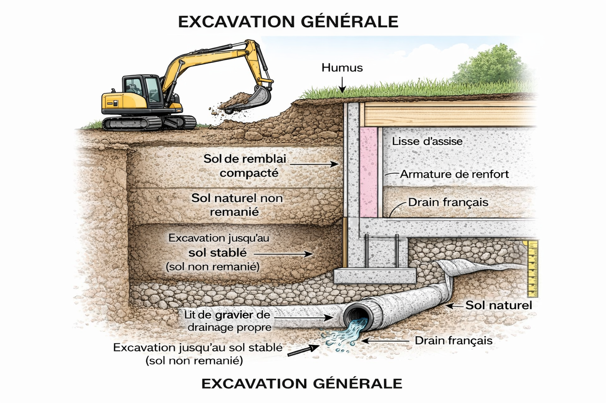
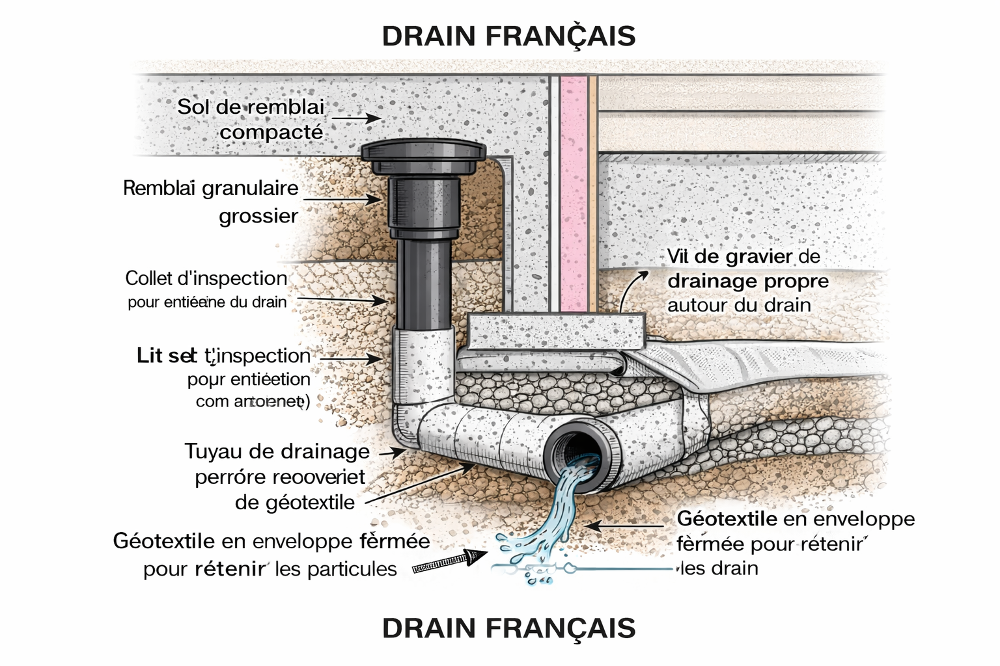
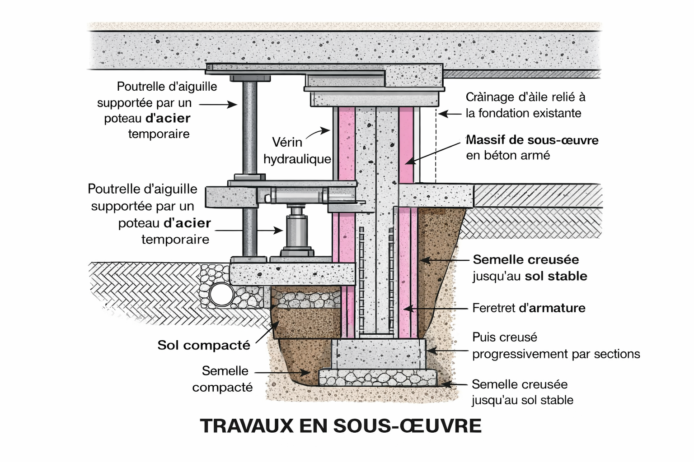
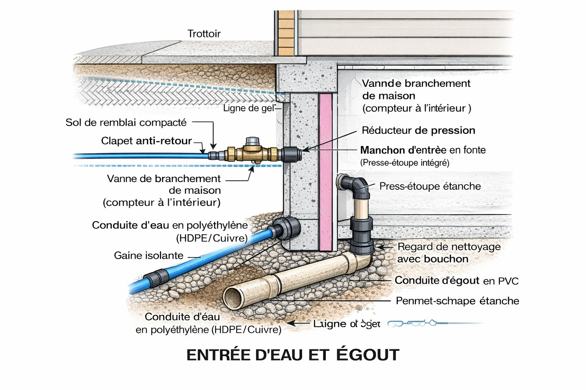

|
Excavation générale|
Entrée d'eau et égout|
Drainage françaisConstruction GSH met son expertise au service de vos projets résidentiels et commerciaux, en vous garantissant des travaux solides, sécuritaires et durables.
Nos services d’excavation générale couvrent tous les travaux nécessaires à la préparation de vos projets de construction. Que ce soit pour une nouvelle fondation, un agrandissement ou un bâtiment commercial, nous intervenons avec rigueur et précision.
Grâce à notre équipement moderne et à notre équipe qualifiée, nous assurons des travaux sécuritaires tout en respectant les délais et les normes en vigueur.

Un système de drainage efficace est essentiel pour protéger votre bâtiment contre l’humidité et les infiltrations d’eau. Construction GSH offre des solutions complètes de drainage français adaptées à votre terrain.
Nous procédons à l’installation, à la réparation ou au remplacement de drains existants afin d’assurer une évacuation optimale des eaux.

Les travaux en sous-œuvre exigent une expertise particulière, surtout lorsqu’ils sont réalisés dans des espaces restreints ou sur des terrains complexes. Notre équipe maîtrise ces interventions délicates.
Nous veillons à renforcer et stabiliser les structures existantes afin de garantir la sécurité et la durabilité de votre bâtiment.

Nous réalisons tous les travaux liés aux entrées d’eau potable et aux systèmes d’égout, qu’il s’agisse d’une nouvelle installation ou d’une mise aux normes.
Construction GSH s’assure que chaque raccordement respecte les réglementations en vigueur, pour un fonctionnement fiable et durable.
